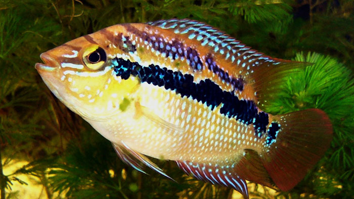
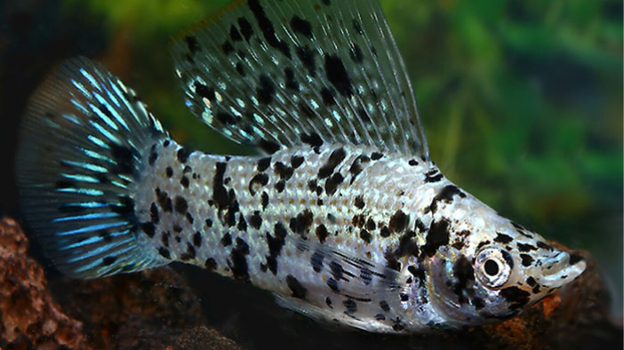
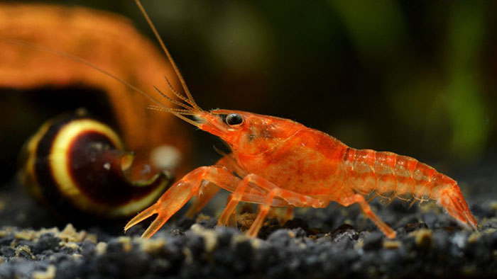

Trichromis salvini
Côte atlantique de l'est du Mexique

Astyanax mexicanus
Grottes de Cueva Chica

Ambystoma Mexicanum
Lacs Xochimilco et Chalco

Xiphophorus helleri
Sud-est du Mexique

Poecilia sphenops
Sud-est du Mexique

Cambarellus patzcuarensis
Lac de Pátzcuaro